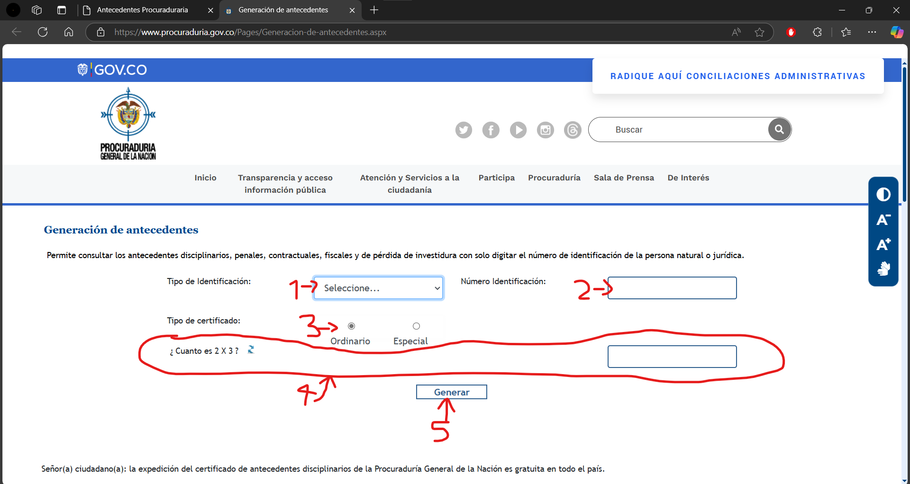
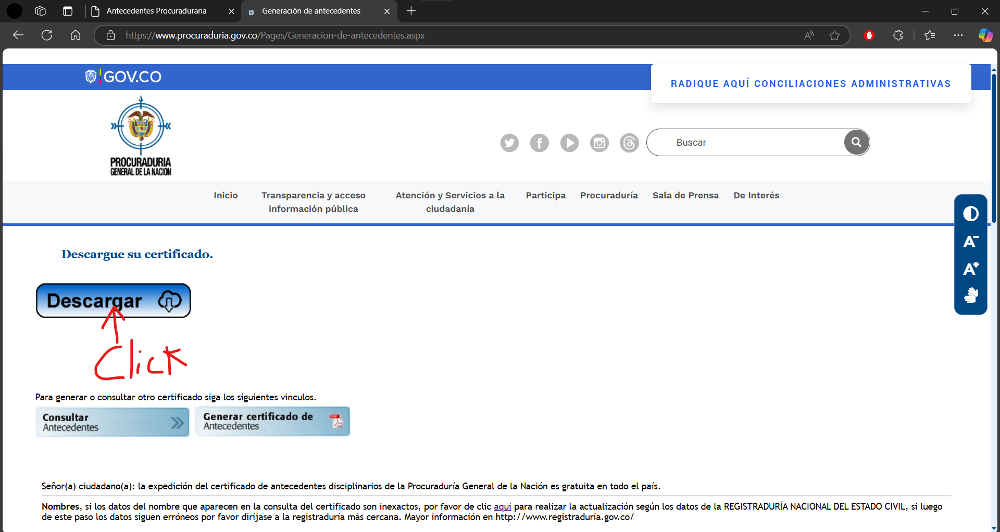
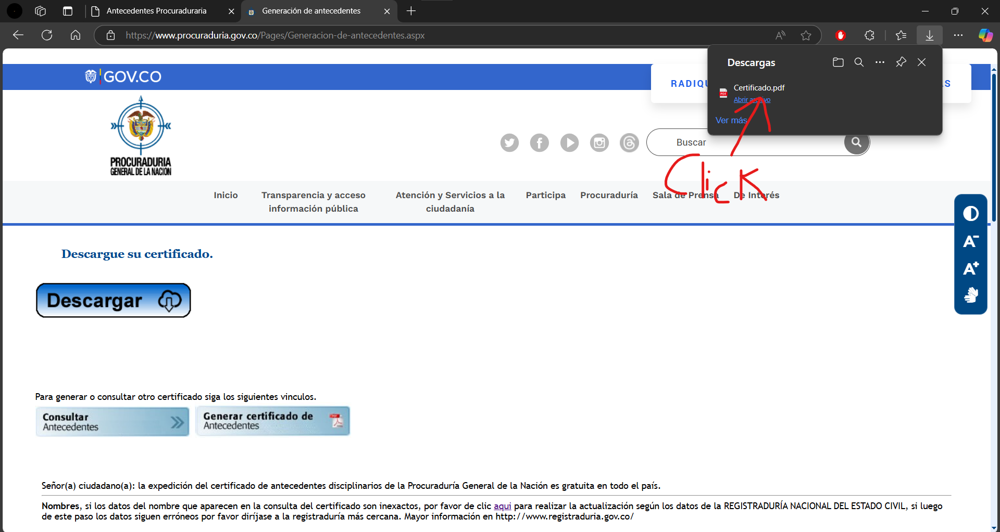
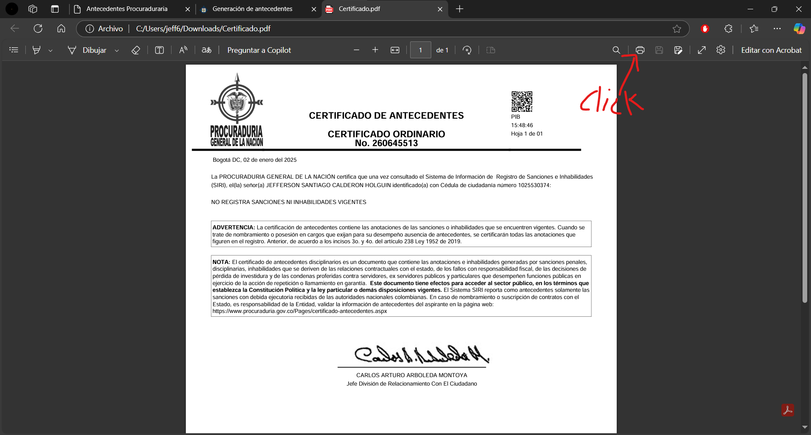
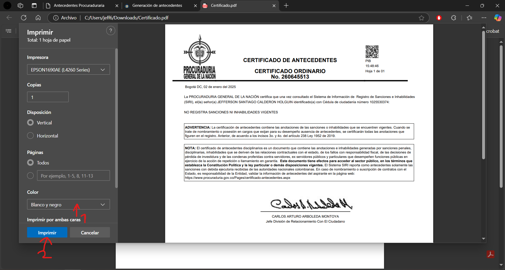

Paso 1.
Abre la página https://www.procuraduria.gov.co/Pages/Generacion-de-antecedentes.aspx.
Abre la página https://www.procuraduria.gov.co/Pages/Generacion-de-antecedentes.aspx.
Se selecciona el tipo de documento del cliente (cédula de ciudadanía o si es extranjero cédula de extranjería) (número 1). Después se ingresa el número de identificación del cliente (número 2). En tipo de certificado se tiene que dejar en ordinario (número 3). Después se responde la pregunta que se muestra en pantalla, SIEMPRE VA A SER DIFERENTE LA PREGUNTA, ASÍ QUE HAY QUE ESTAR PENDIENTE SI SE REQUIERE PREGUNTAR AL CLIENTE (número 4). Por último se da click en "Generar" (número 5).
Se da click en descargar.
Después se da doble click en el archivo o se le da click en "abrir archivo".
Después se da click en imprimir como se ve en la imagen.
Después aparece esto como se ve en la imagen, se selecciona si es a color o a blanco y negro (número 1). Por último se da click en imprimir (número 2).
